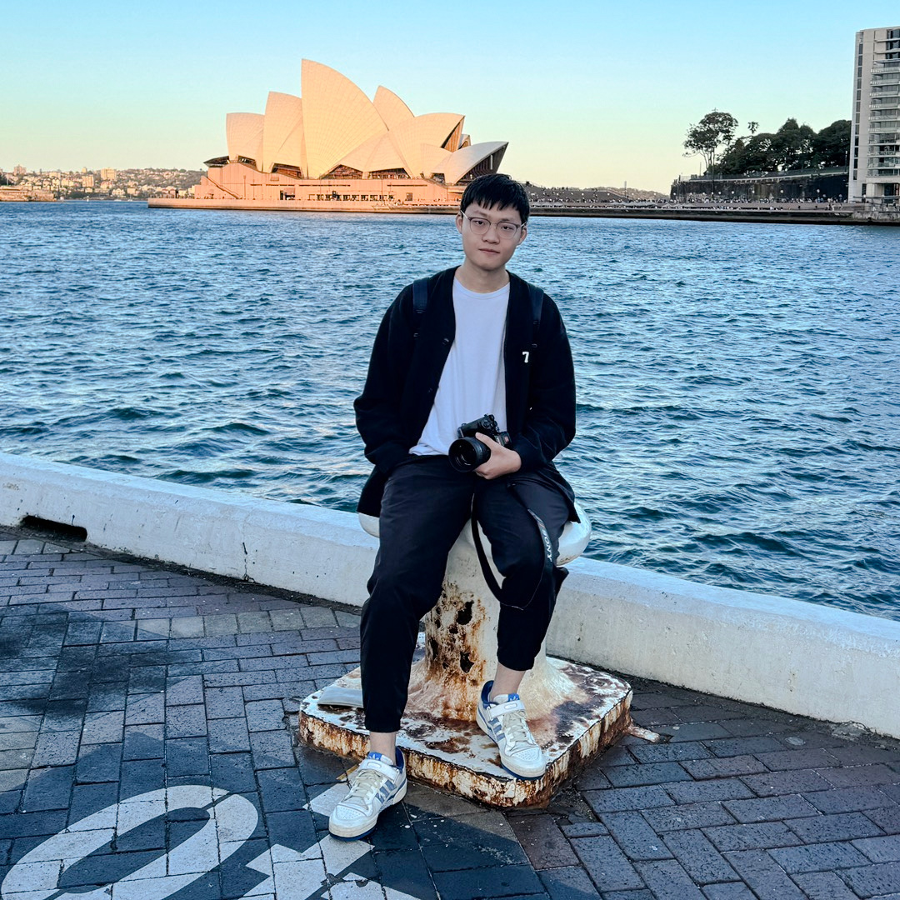

黄 涛研究员商汤科技 Email: hunto [at] foxmail.com or huangtao [at] senseauto.com
|
 |


个人简历 [CV]
我的研究方向主要包括自动机器学习及其它计算机视觉任务，如人脸识别和目标检测。
News
- [2021/01] 一篇关于通道数搜索（剪枝）的论文被ICLR2021接收为spotlight。
- [2020/11] 一篇关于NAS的论文已公开至arXiv。我们的TopoNAS直接学习了可微NAS（DARTS）的拓扑结构，搜索到的模型取得了显著的效率提升。
- [2020/10] 一篇关于量子结构搜索（QAS）的论文已公开至arXiv。我们的QAS隐式地学习了一种可以很好降低量子噪声和梯度消失影响的规则。
- [2020/02] 一篇关于NAS的文章被录用至CVPR2020。
教育经历
-
华中科技大学，中国武汉2016年9月 – 2020年6月
计算机科学与技术 学士学位
Publications
*: equal contribution.-
Locally Free Weight Sharing for Network Width Search
Xiu Su, Shan You, Tao Huang, Fei Wang, Chen Qian, Changshui Zhang, Chang Xu.
To appear in International Conference on Learning Representations (ICLR, Spotlight), 2021.
[Paper]
-
GreedyNAS: Towards Fast One-Shot NAS with Greedy Supernet
Shan You*, Tao Huang*, Mingmin Yang*, Fei Wang, Chen Qian, and Changshui Zhang.
IEEE Conference on Computer Vision and Pattern Recognition (CVPR), 2020.
Manuscripts
*: equal contribution.-
Explicitly Learning Topology for Differentiable Neural Architecture Search
Tao Huang, Shan You, Yibo Yang, Zhuozhuo Tu, Fei Wang, Chen Qian, and Changshui Zhang.
arXiv preprint arXiv:2011.09300 (2020). -
Data Agnostic Filter Gating for Efficient Deep Networks
Xiu Su, Shan You, Tao Huang, Hongyan Xu, Fei Wang, Chen Qian, Changshui Zhang, and Chang Xu.
arXiv preprint arXiv:2010.15041 (2020). -
Quantum circuit architecture search: error mitigation and trainability enhancement for variational quantum solvers
Yuxuan Du, Tao Huang, Shan You, Min-Hsiu Hsieh, and Dacheng Tao.
arXiv preprint arXiv:2010.10217 (2020).
经历
-
商汤科技，中国北京
研究员2020年7月 – 至今
见习研究员2019年8月 – 2020年7月
- 研究神经结构搜索（NAS）与模型剪枝。
- 将NAS应用至人脸识别任务上，显著提升了模型在大规模工业数据集上的精度。
-
地平线机器人，中国北京2019年5月 – 2019年8月
计算机视觉算法实习生
- 目标检测框架开发：anchor-free的检测算法、交通场景下的检测。
- 目标检测、人脸关键点知识蒸馏方法研究。
-
点团队，中国武汉
实时人脸检测与关键点项目组长，AI组2018年12月 – 2019年5月
- 开发安卓APP以在移动设备上运行人脸识别、跟踪、106点关键点检测模型。
- 模型加速（如知识蒸馏、模型剪枝）和人脸关键点（如多任务学习、损失函数、数据增强）研究。
- 我们提出的模型在华为Mate20 Pro上达到了5ms每张图的运行速度。
贝贝智能客服项目核心成员，AI组2018年2月 – 2018年12月
- 本项目来自于贝贝集团，贝贝是中国最大的母婴电商平台。项目的目的是基于用户的提问找到最优的问题分类。
- 文本分类与数据增强的研究与开发。
-
3D打印团队，中国武汉2017年1月 – 2019年1月
嵌入式组组长
方向：开发3DP/FDM 3D打印机的控制算法。
荣誉与奖励
-
华中科技大学优秀毕业论文2020年6月
-
华中科技大学优秀毕业生2020年6月
-
全国大学生智能互联创新大赛 华南赛区一等奖2018
-
湖北省 “挑战杯”竞赛 三等奖2018
-
华中科技大学“挑战杯”竞赛 一等奖2018
-
“有方杯”物联网电子设计大赛 二等奖2018
-
“种子杯”机器学习竞赛 三等奖2017
-
华中科技大学科技创新奖学金2017
-
“有方杯”物联网电子设计大赛 三等奖2017